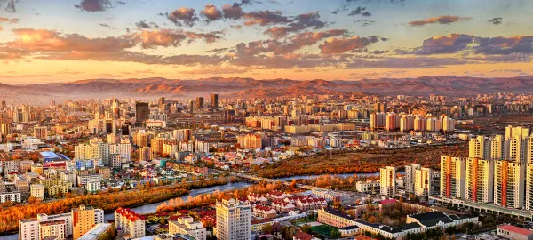

Demografia
A Mongólia tem uma população de 3.329.000 habitantes, segundo as informações das Nações Unidas. Com um amplo território de mais de um milhão de km² de área, entretanto, a nação se torna o segundo país do mundo com menor densidade demográfica. A distribuição populacional é da ordem de 2,1 hab./km² e não ocorre de forma homogênea.
Ulan Bator, capital da Mongólia. Nela, vivem 46% de toda a população do país.
Quase 70% do povo da Mongólia vive nas cidades, o que a
caracteriza como uma nação urbanizada. A maior parcela
da população urbana está em Ulan Bator, cidade que reúne
atualmente 1.552.700 habitantes. Isso significa que 46%
de todo o contingente populacional está concentrado na capital do país.
Darhan, localizada a noroeste de Ulan Bator, é a segunda
cidade mais populosa da Mongólia, com pouco mais de 83
mil habitantes. O que ambas têm em comum é a sua localização
ao norte, uma região de clima relativamente mais ameno
que do sul, que apresenta condições desérticas.
A taxa de crescimento da população da Mongólia é de 0,93%
ao ano, o que se deve principalmente ao fato de que o número
de nascimentos supera o número de mortes, não obstante a
elevada emigração registrada recentemente. A idade mediana
da população é de 29,8 anos, enquanto a expectativa de vida no país é 71,08 anos.
Cidades mais populosas
| Posição | Localidade | Província | População |
|---|---|---|---|
| 1 | Ulan Bator | Ulan Bator | 1.552.700 habitantes |
| 2 | Darhan | Darhan-Uul | 83.000 habitantes |
| 3 | Erdenet | Orkhon | 80.000 habitantes |
| 4 | Choybalsan | Dornod | 38.150 habitantes |
| 5 | Mörön | Khövsgöl | 36.082 habitantes |
Províncias da Mongólia
- Arkhangay
- Bayan-Ölgiy
- Bayankhongor
- Bulgan
- Darhan-Uul
- Dornod
- Dornogovi
- Dundgovi
- Govi-Altay
- Govisümber
- Khentiy
- Khovd
- Khövsgöl
- Ömnögovi
- Orhon
- Övörkhangay
- Selenge
- Sükhbaatar
- Töv
- Uvs
- Zavkhan